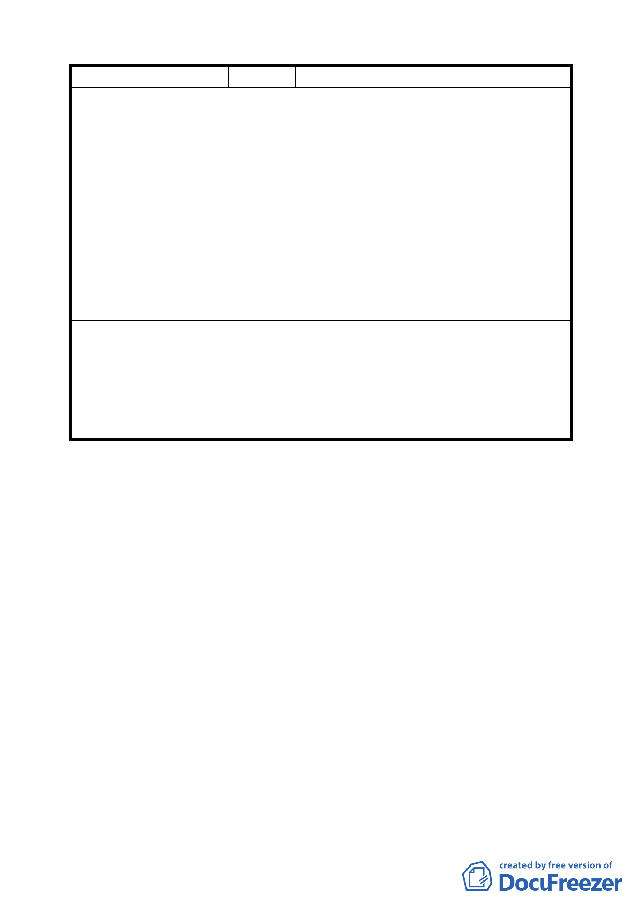

宏益企業股份有限公司
一、陳情位置：臺北市北投區豐年段 4 小段 527-1、528-1、
591-3 、 592-1 、 529-2 、 530-1 、 537-1 、 538-1 、 532-1
等地號（計畫範圍內）。
二、本基地由工業區以回饋方式變更為交通用地，並於捷運
淡水線通車後，即無償提供做轉乘平面停車場及捷運站
陳情理由
人、車出口通路，且聯合開發時，本基地仍提供部份土
地做捷運站人、車出口通路。因此本基地區位在交通便
捷、配合市場機制與增加服務考量下，應更擴大允許使
用項目。
三、本基地聯合開發時，已提供相當多的土地做捷運站人、
車出口通路。若再留設更多的開放空間，將造成建蔽率太
低，致使建築物容積無法完全使用。
一、取消惟住宅使用比例不得超過總容積樓地板面積之 30%
建議辦法
的規定，擴大允許三樓以上可做住宅使用。
二、取消（或減少）基地內留設 500 平方公尺及 200 平方公
尺以上廣場式開放空間之規定。
委員會議
決議
維持原公展計畫。
討論事項八
案名：配合臺北市捷運系統內湖線工程變更臺北市內湖區康寧段
三小段 178 地號部分住宅區土地為交通用地計畫案
說明：
一、本件係市府以 94 年 10 月 28 日府都規字第 09419828103 號
函送到會，並自 94 年 10 月 31 日起公開展覽 30 天。
二、法令依據：都市計畫法第 27 條第 1 項第 4 款。
三、申請單位：臺北市政府（捷運工程局）。
四、變更位置：詳計畫圖所示。
五、變更理由及內容：詳計畫書。
六、說明會日期：94 年 11 月 10 日（內湖區公所簡報室）。
七、公民或團體所提意見：無。
決議：照案通過。
二六